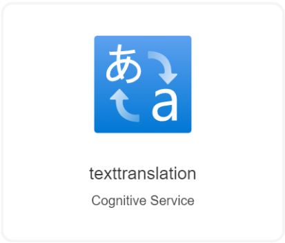

This template deploys an Cognitive Services Translation API. see https://azure.microsoft.com/services/cognitive-services/translator-text-api/
| SKU | Feature | Price |
|---|---|---|
| F0 | Standard Translation Text Translation Language Detection Bilingual Dictionary Transliteration Custom Translation Training |
Free - 2M chars of any combination of standard translation and custom training free per month |
| S1 | Standard Translation Text Translation Language Detection Bilingual Dictionary Transliteration Custom Translation Translation Training Custom model hosting |
$10 per million chars of standard translation |
| S2 | Standard Translation Custom Translation |
$2,055.001/month 250M chars per month included Overage: $8.22 per million chars |
| S3 | Standard Translation Custom Translation |
$6,000/month Up to 1B chars per month Overage: $6 per million chars |
| S4 | Standard Translation Custom Translation |
$45,000/month Up to 10B chars per month Overage: $4.50 per million chars |
If you are new to Azure Cognitive Services, see: